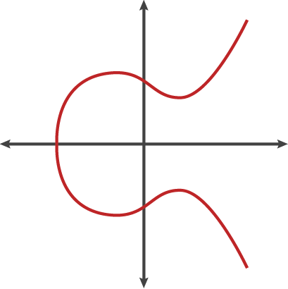

ECC
ECC(Elliptic Curve Cryptography)
ECC equation
The equation of an elliptic curve looks like this:
\(
y^2=(x^3 +a*x +b) \pmod{p}
\)

ECC point add
- If the two points being added have different x-coordinates, then the line passing through the two points is used to find the point of intersection, which is then reflected over the x-axis to get the sum of the two points.
- If the two points being added are the same point, then the tangent line to the curve at that point is used to find the third point of intersection, which is then reflected over the x-axis to get the sum of the two points.
- If the two points being added have the same x-coordinate (symmetrical) but different y-coordinates, then the sum of the two points is the point at infinity.
- If one of the points being added is the point at infinity, then the sum of the two points is the other point being added.


why chosen symmetrical point:
In ECC, when adding two points on a curve, it is possible that the result of the additon will be a point at infinity.When this happens, the result is still considered valid, but it is not useful for cryptographic operations. To avoid this situation,ECC use a symmetrical point for each point on the curve,such that when two points are added together, the resulting point is guaranteed to be on the curve. This is essential for the security and efficiently of ECC-based cryptographic protocols.
The ECC used for cryptography
curve order:
Rather than allow any value for the points on the curve, we restrict ourselves to whole numbers in a fixed range. In ECC, the size of the elliptic curve is determined by the number of points on the curve,which is denoted by a parameter called the "order" of the curve.The order of an elliptic curve is always a positive integer, and it represents the number of points on the curve, including the point at infinity.
order must be a large prime number:
To ensure the security of ECC-based cryptographic protocols, the order of the curve must be a large prime number. This is because the security of ECC depends on the difficulty of solving the elliptic curve discreate logarithm problem (ECDLP, the trap door function of ECC),which is the problem of finding the intger k such that \( Q=kP \), where P and Q are points on the curve, and k is a secret integer.The larger the order of the curve, the more difficult it is to solve the ECDLP.
If the order of the curve is not a prime number, then it can be factored into smaller factors, which can be used to attack the curve and compromise the security of ECC-based cryptographic protocols.
The necessary and sufficient condition for the existence of a multiplicative inverse of b is that b is coprime with the modulus m.Let c be the inverse of b about modulus m,i.e., \( b*c\equiv 1 \pmod{m} \).
Explanation: \( a/b=a/b\times1=(a/b)(b\times c)=a\times c \pmod{m} \)
ECC Encryption / Decryption In HTTPS
\( Q_a=d_A*G \)
encrypt:
generate random secret number: \( k \)
calc symmetric encryption key: \( sk = k*Q_a \)
calc the random point on curve: \( R=k*G \)
export \( (R, encryptedMsg) \)
decrypt:
\( sk=R*d_A \), then use sk to decrypt the encryptedMsg.
proof:
\( sk=k*Q_a=k*d_A*G=R*d_A \)
How to calc the public key of ECC
The double-and-add method is an efficient algorithm for computing scalar multiplication on an elliptic curve,and is commonly used for calculating the public key in elliptic curve cryptography.The algorithm proceeds as follows:
- Initialize a point Q to the point at infinity on the curve.
- Convert the scalar k to its binary representation.
- For each bit i in the binary representation of k, starting from the most significant bit:
- Double the current value of Q.
- if the i-th bit of k is 1, add P to the current value of Q.
- The final value of Q is the result of the scalar multiplication of P by k.
ECDSA (Elliptic Curve Digital Signature Algorithm)
Signing the message:
- Hash the message usinga cryptographic function to generate a fixed-length digest, denote as \(h\).
- Generate a random number \(k\), which is kept secret.
- Calculate a point R on the elliptic curve: \(R=k*G\).
- Calculate a scalar: \( s=k^{-1}(h+d_A*r) \), r is the x coordinate of R.
- The signature is the pair: \((r,s)\).
Verifying the signature:
- Hash the message using the same cryptographic hash function used to sign the message, denote as \(h\).
- Calculate a Point \(P=s^{-1}*h*G+ s^{-1}*r*Q_a \)
- If the x coordinate of P and R is equal, that means the signature is valid.
Proof:
we have: \( P=s^{-1}*h*G + s^{-1}*R*Q_a \)
but \( Q_a=d_A*G \)
so \( P=s^{-1}*h*G + s^{-1}*r*d_A*G= s^{-1}(h+d_A*r)*G \)
But the x coordinate of P must match R and r is the x coordinate of k*G, which means that:
\( k*G=s^{-1}(h+d_A*r)*G \)
we can simplify by removing G which gives us:
\( k=s^{-1}(h+d_A*r) \)
by inverting k and S, we get:
\( s=k^{-1}(h+d_A*r) \)
and that is the equation used to generate the signature. so it matchs.
Why Ethereum use signature(r,s,v)
Ethereum add additional v to recovery a unique public key.
In the verifying step, we have: \(P=s^{-1}*h*G + s^{-1}*r*Q_a \)
as P's x coordinate must match R : \( R=s^{-1}*h*G + s^{-1}*r*Q_a \)
\( s*R= h*G + r*Q_a \)
\( s*R-h*G=r*Q_a \)
\( sr^{-1}*R - hr^{-1}*G=Q_a \) \
the equation of seckp256k1 is: \( y^2=x^3+7 \), so R may have two points which was symmetrical of x-axis.Thus, Ethereum use v to define use positive R or negative R.It is a well-known fact that for every valid signature (r,s), the pair (r,-s) is also a valid signature.
The importance of random k
Assume you have two signatures,both with the same k,then they will both have the same r value, and it means that you can calculate k using two s signatures with hash h and h' respectively:
\( s-s'=k^{-1}(h+d_A*r) - k^{-1}(h'+d_A*r)= k^{-1}(h+d_A*r -h'-d_A*r)= k^{-1}(h-h') \)
\( k=\frac{h-h'}{s-s'} \)
\( d_A=\frac{s*k-h}{r} \)
Sony PS3's ECDSA private key was leak by them same random k.This is also the reason why it is impossible to have a custom firmware above 3.56, simply because since the 3.56 version, Sony have fixed their ECDSA algorithm implementation and used new keys for which it is now impossible to find the private key.
The cost of rho method
地球上沙子的数量：
地球半径约为6400km，用球的体积公式算下来，地球体积大约是1.098×10^12立方千米，合1.098×10^30 立方毫米。假设整个地球都是沙子，一粒沙子的大小是1立方毫米，那么地球约有1.098×10^30个沙子。
使用 rho 破解 secp256k1 需要的计算次数约为 \( 2^{128} \approx 3.4 \times 10^{38} \),这个破解难度相当于假设你有1亿台机器并发去做数沙子的任务，需要把地球上的沙子数清楚。